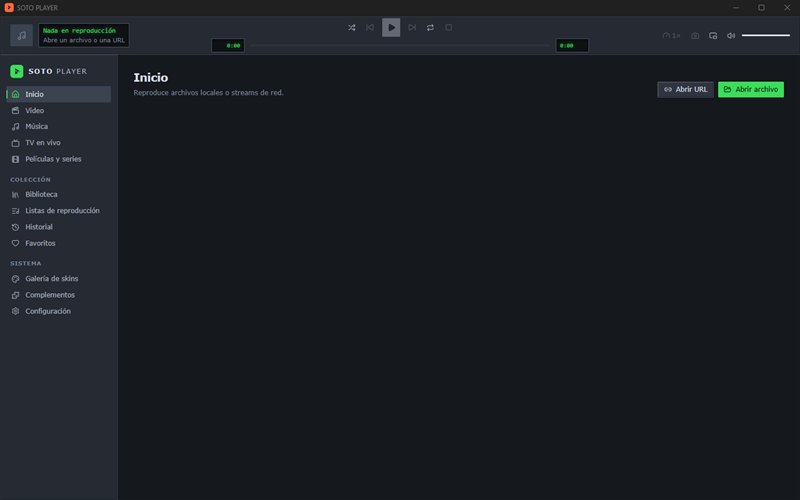
SOTO PLAYER
Plataforma multimedia para Windows: video, música, streams de red y TV en vivo en una sola app, con skins y complementos.
Novedad Complementos de catálogo con películas, series, fuentes y subtítulos.
Ver en GitHub ↗Software que corre en tu equipo.
Creo aplicaciones de escritorio, web, sistemas y juegos. Me gustan las que funcionan sin servidores ni cuentas, bien diseñadas y pensadas para gente real.

Plataforma multimedia para Windows: video, música, streams de red y TV en vivo en una sola app, con skins y complementos.
Novedad Complementos de catálogo con películas, series, fuentes y subtítulos.
Ver en GitHub ↗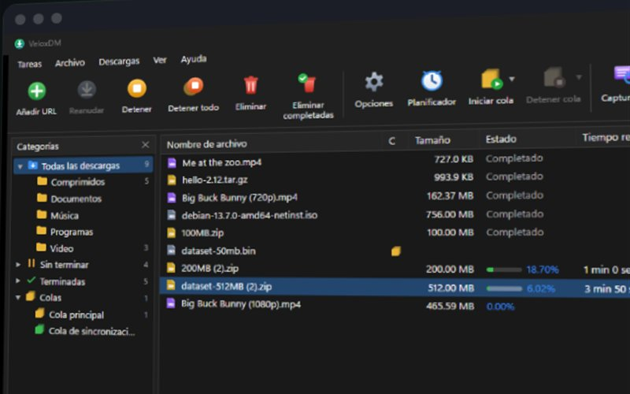
Gestor de descargas con segmentación dinámica, colas, planificador, video, BitTorrent y extensión de navegador.
Novedad Si un sitio exige una verificación, la descarga abre tu navegador para que la resuelvas tú.
Ver en GitHub ↗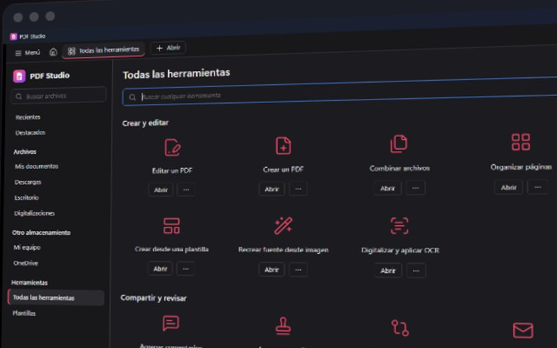
Editor de PDF completo: crear, editar, anotar, firmar, OCR, formularios y exportar a Office.
Novedad Versión 0.5.0 con unas 60 herramientas y plantillas editables.
Ver en GitHub ↗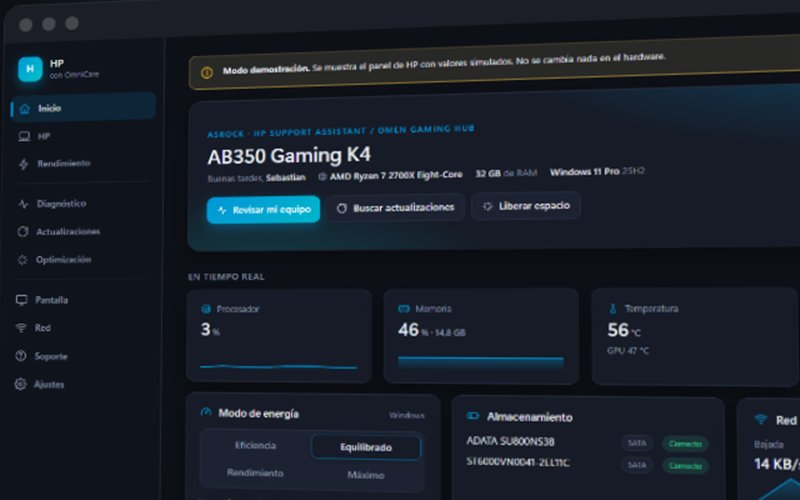
Centro de control para Windows: rendimiento, batería, diagnóstico y actualizaciones, con funciones específicas por marca de equipo.
Novedad Primera versión con funciones para ocho marcas de equipos.
Ver en GitHub ↗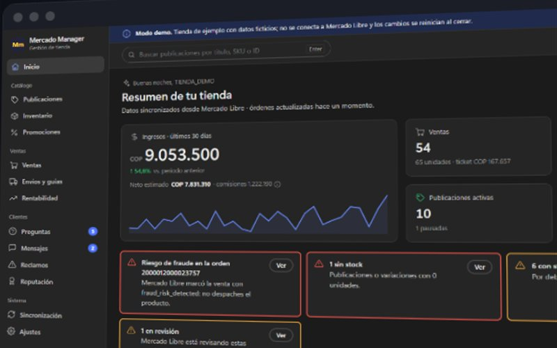
Administra una tienda de Mercado Libre desde el escritorio, 100 % local y con la API oficial: publicaciones, ventas, envíos y rentabilidad.
Novedad Interfaz rediseñada, preguntas y mensajes de posventa.
Ver en GitHub ↗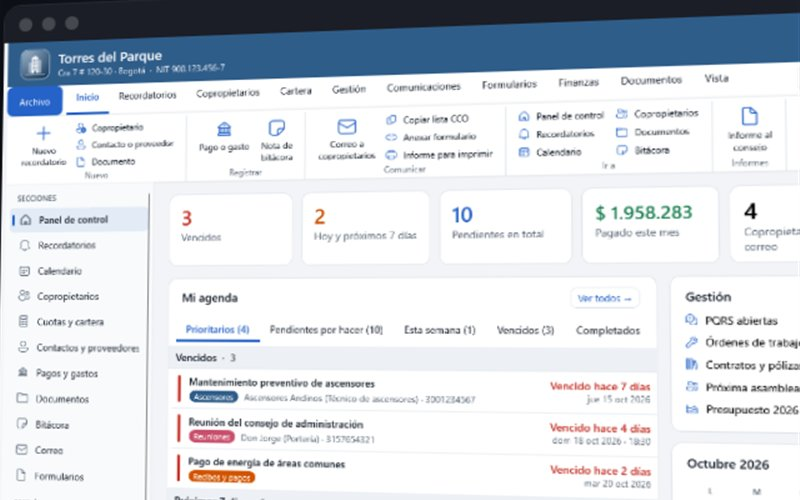
Administración de conjuntos y edificios: cartera, asambleas, PQRS, contratos, presupuesto y correos masivos.
Novedad Centro de gestión con indicadores, agenda de hoy y agenda global.
Ver en GitHub ↗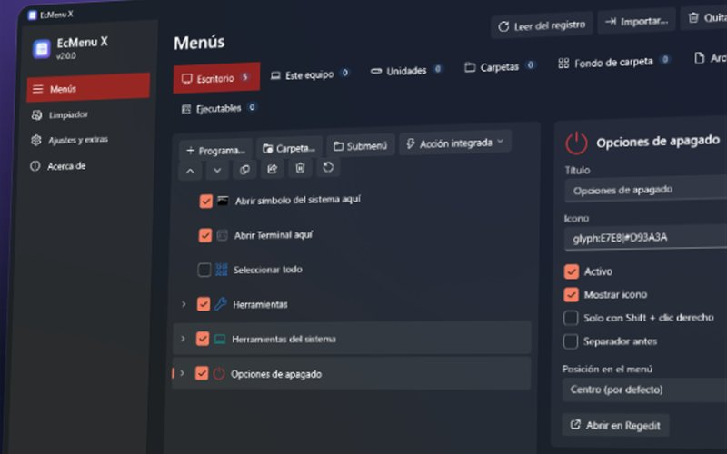
Personaliza el clic derecho de Windows con más de 50 acciones, submenús y un limpiador, sin permisos de administrador.
Novedad Versión 2.0 con interfaz Fluent, limpiador y más de 50 acciones.
Ver en GitHub ↗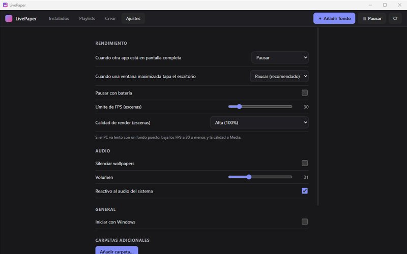
Fondos de pantalla animados: escenas 2D y 3D, video, web y apps, con un motor de render WebGL propio.
Novedad Versión 1.0 con motor WebGL propio y editor Crear.
Próximamente en GitHub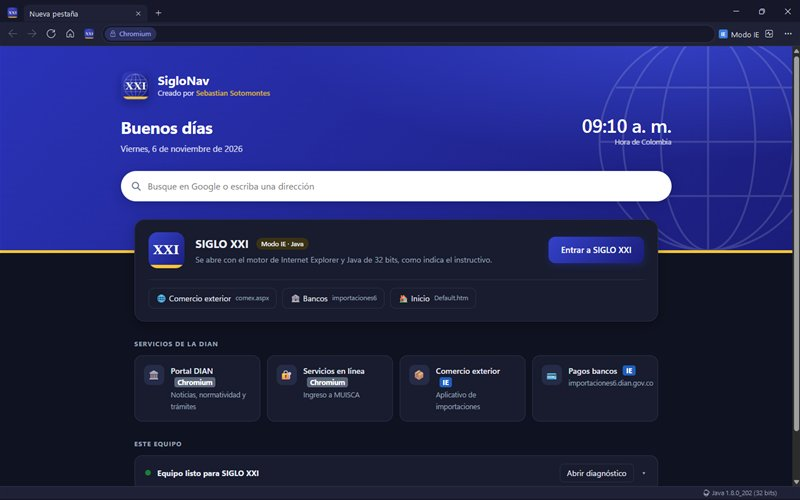
Navegador de doble motor: Chromium para la web actual e Internet Explorer 11 con Java para aplicativos heredados, en la misma ventana.
Novedad Activa Java web sola en los equipos donde estaba deshabilitado.
Ver en GitHub ↗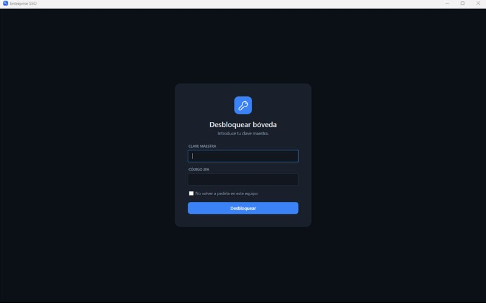
Bóveda de credenciales cifrada que inicia sesión sola en aplicativos web y de escritorio, con una única clave maestra.
Novedad Varias cuentas por dominio con selector.
Ver en GitHub ↗Diagnóstico y reparación de Windows con una interfaz cinematográfica, donde cada contador y hallazgo es un dato real del equipo.
Novedad Versión en C# con modo diagnóstico que no modifica nada.
Ver en GitHub ↗Monitor de salud de discos: estado SMART, temperatura, horas de uso y alertas.
Novedad Lectura SMART con alertas por disco.
Próximamente en GitHubCifrado AES, esteganografía y un formato propio .SSA para esconder y proteger archivos dentro de imágenes y audio.
Novedad Formato .SSA con verificación de integridad.
Próximamente en GitHubConvierte audio y video a texto con Whisper, en tu propio equipo y sin enviar nada a la nube.
Novedad Selección de modelo y progreso en vivo.
Próximamente en GitHub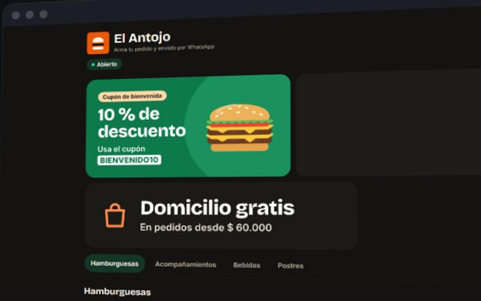
Menú digital gratis para pequeños negocios: el cliente arma su pedido desde el celular y llega por WhatsApp.
Novedad Multi-comercio con panel, reportes, cupones y código QR.
Ver en GitHub ↗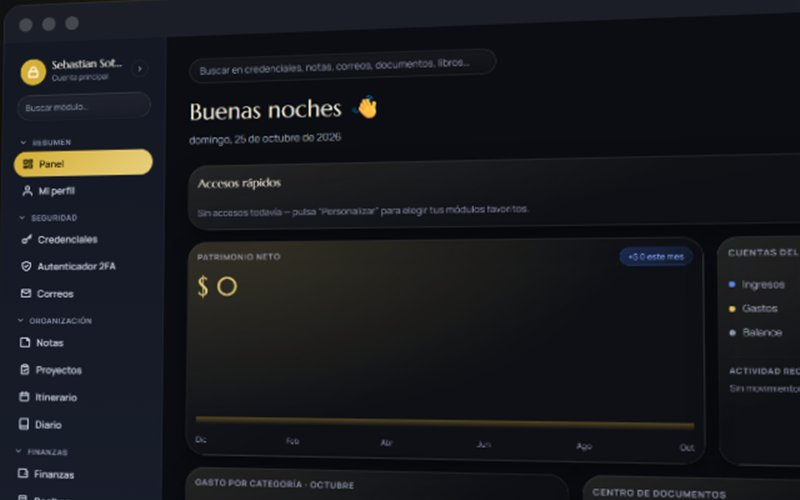
Panel personal todo en uno: credenciales, 2FA, notas, proyectos, finanzas, recibos y suscripciones.
Novedad Panel con patrimonio, gastos y recordatorios.
Próximamente en GitHubConvierte el PDF de exportación de datos de una cuenta de Epic Games en un panel claro, todo en el navegador.
Novedad Interfaz en español e inglés.
Próximamente en GitHub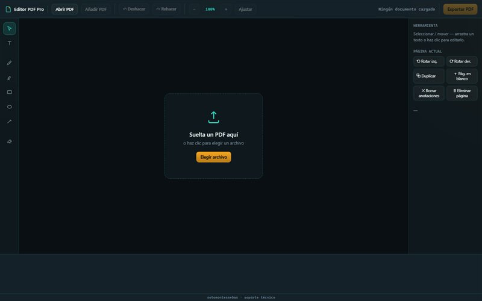
Anota, agrega texto y formas, rota o reordena páginas y exporta. El documento nunca sale de tu equipo.
Novedad Combinar documentos y exportar anotaciones dentro del PDF.
Próximamente en GitHub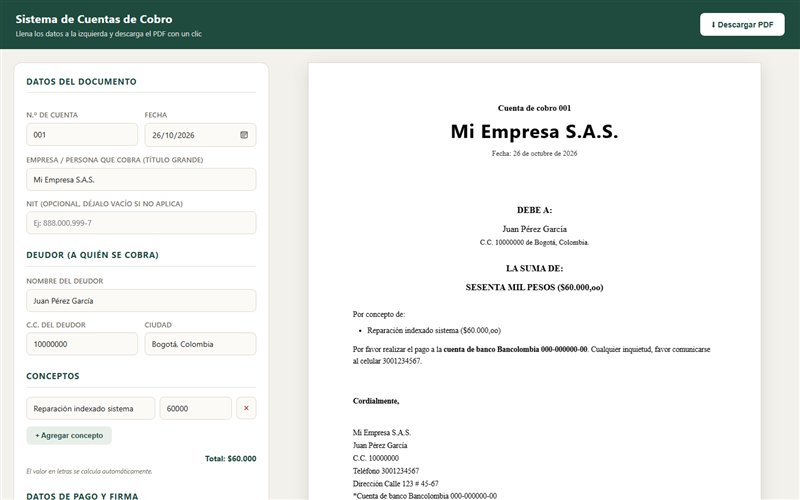
Genera cuentas de cobro en PDF con el valor en letras calculado solo, para independientes en Colombia.
Novedad Valor en letras automático y descarga en PDF.
Próximamente en GitHub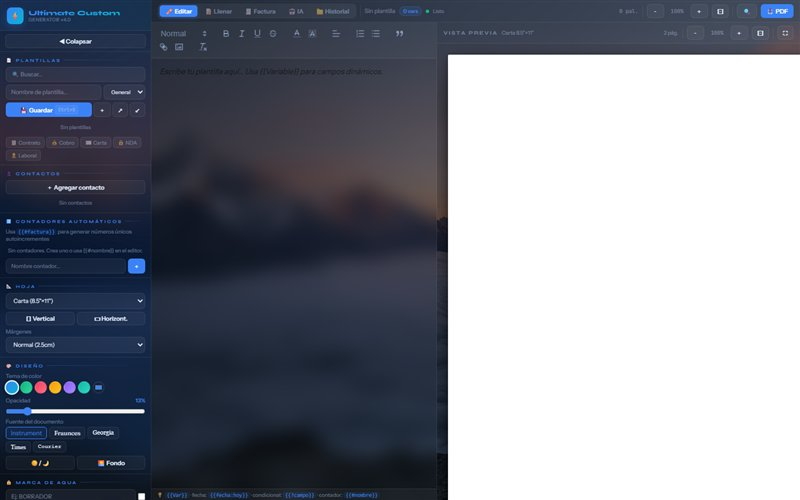
Contratos, cartas y facturas con campos dinámicos y contadores, listos para exportar a PDF.
Novedad Modos Editar, Llenar y Factura con marca de agua.
Próximamente en GitHub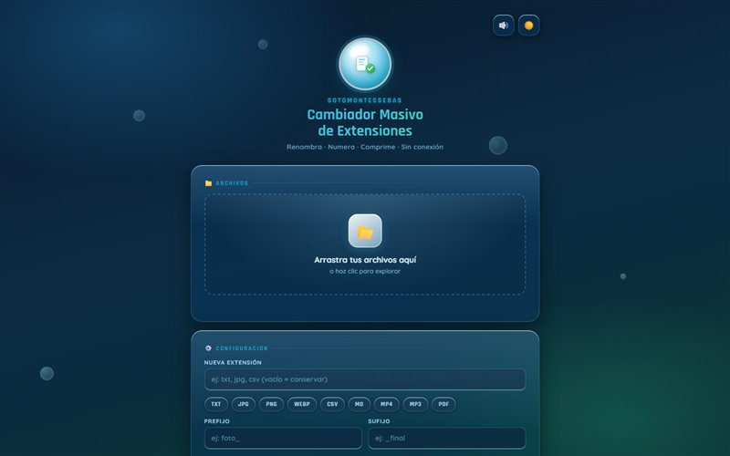
Renombra, numera, cambia la extensión y comprime muchos archivos a la vez, sin subirlos a ningún servidor.
Novedad Funciona sin conexión y comprime en ZIP.
Próximamente en GitHub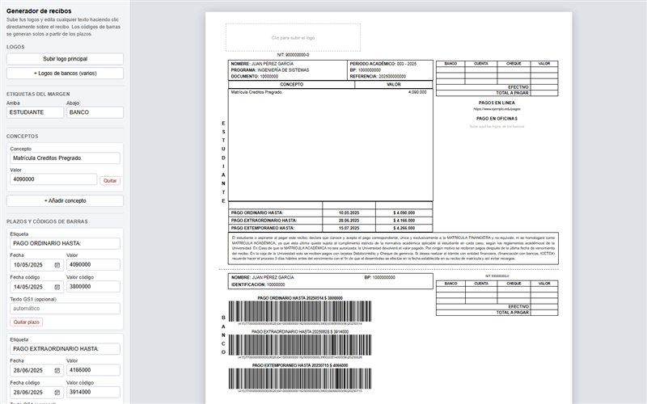
Recibos de pago editables sobre el propio documento, con códigos de barras GS1 generados a partir de los plazos.
Novedad Códigos de barras GS1-128 por cada plazo.
Próximamente en GitHubVisor del casillero de Fortnite en una app web local, con inicio de sesión oficial por device-code.
Novedad Versión web local y de escritorio con la misma lógica.
Próximamente en GitHub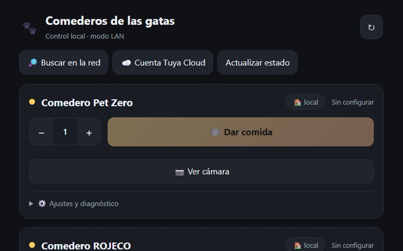
Una sola web para controlar dos comederos inteligentes, por WiFi local o por la nube.
Novedad Importación automática de dispositivos y vista de cámara.
Próximamente en GitHub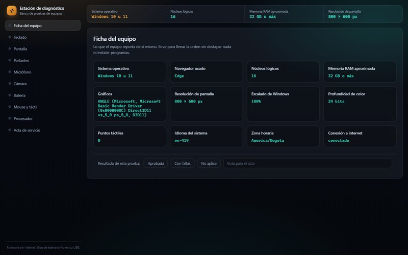
Banco de pruebas de hardware que corre desde una USB, sin internet, y genera un acta de servicio firmada.
Novedad Acta de servicio con firma y resultados autollenados.
Próximamente en GitHub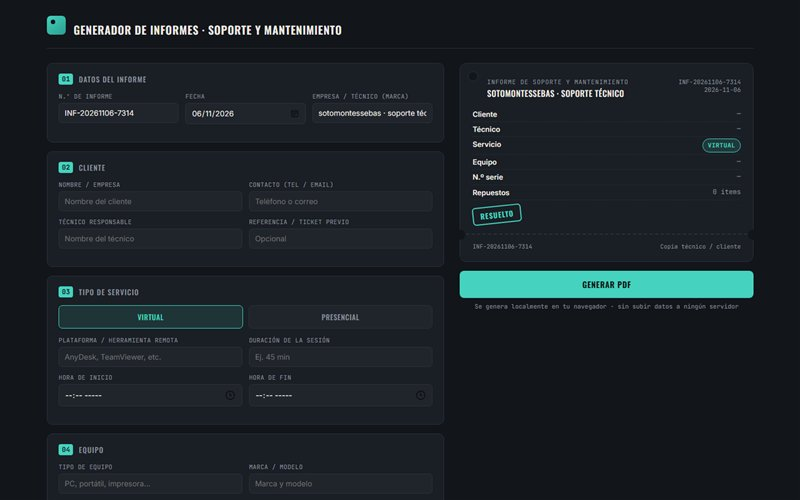
Informes de reparación y soporte, virtuales o presenciales, con vista previa en vivo y PDF profesional.
Novedad Vista previa en vivo y PDF numerado por secciones.
Próximamente en GitHub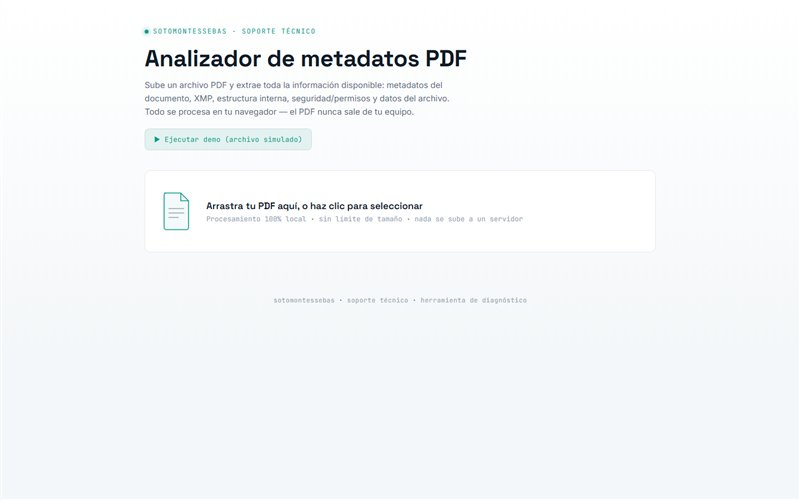
Muestra lo que un PDF trae por dentro: autor, fechas, estructura, permisos y metadatos XMP.
Novedad Modo demo y exportación a JSON o TXT.
Próximamente en GitHub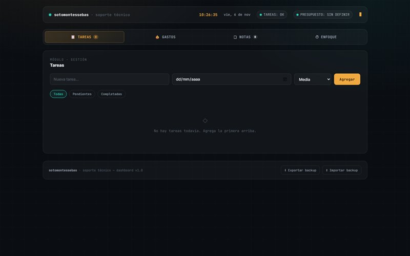
Tareas, gastos, notas y Pomodoro en un panel con estética de monitoreo de servidores.
Novedad Copia de seguridad para exportar e importar tus datos.
Próximamente en GitHub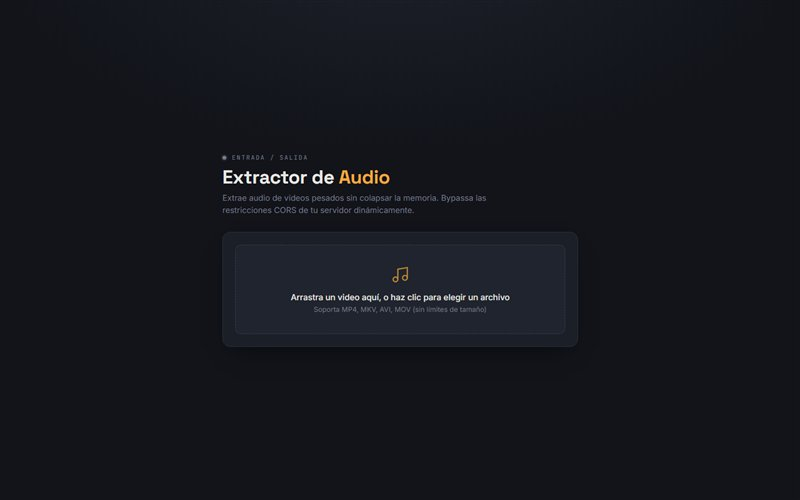
Saca el audio de un video en el navegador, con FFmpeg en WebAssembly y sin subir el archivo.
Novedad Procesa videos pesados dentro del navegador.
Próximamente en GitHubExtensión de navegador que guarda en tu equipo los videos que ya puedes ver en Telegram Web.
Novedad Descarga por bloques con reintentos y guardado directo a disco.
Próximamente en GitHubDistribución GNU/Linux basada en Debian 13 y KDE Plasma 6, con una identidad visual propia.
Novedad Base del proyecto definida: Debian 13, KDE Plasma 6 y estilo SotOS Glass.
Próximamente en GitHubApp para iPhone que organiza películas y series, con reproductor híbrido y motor de torrents propio.
Novedad Reproductor híbrido con cambio automático según el formato.
Próximamente en GitHubUSB de servicio técnico con arranque múltiple y un menú propio ordenado por categorías.
Novedad Menú de arranque por categorías con tema propio.
Próximamente en GitHubElimina de imágenes, documentos de Office y PDF los datos ocultos como autor, fechas y ubicación GPS.
Novedad Limpia imágenes, Office y PDF, también por carpetas.
Próximamente en GitHubVigila precios de Amazon y avisa por WhatsApp cuando un producto baja de tu precio objetivo.
Novedad Aviso por WhatsApp sin repetir el mismo precio.
Próximamente en GitHubMantiene un dominio apuntando a una IP dinámica para llegar a un equipo por escritorio remoto.
Novedad Actualiza el registro solo cuando cambia la IP.
Próximamente en GitHubJuego de plataformas 3D con seis mundos, jefes y medallas, y niveles que un bot recorre con física real para validarlos.
Novedad Seis mundos jugables con jefes y medallas.
En desarrolloVersión en HTML5 de un creador de avatares que dependía de Flash, en tres idiomas y sin instalación.
Novedad Funciona sin Flash ni instalación, en tres idiomas.
Código privado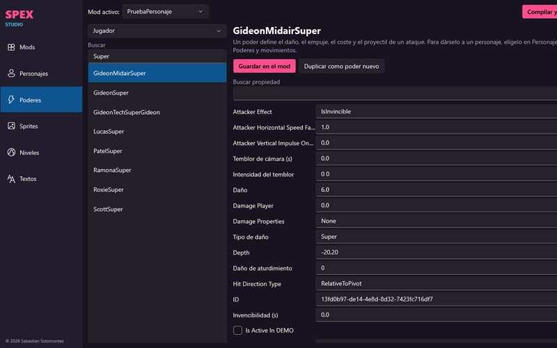
Editor de mods para Scott Pilgrim EX: niveles, personajes, poderes, sprites y textos, aplicados en memoria sin tocar la carpeta del juego.
Novedad Editor de niveles, personajes, poderes, sprites y textos.
Código privadoLa mayoría de mis apps guarda todo en tu equipo y funciona sin servidores ni cuentas.
Las herramientas web procesan los documentos en el navegador. Nada se sube.
C#, Rust, Python, TypeScript o Unity: uso lo que cada problema pide.
Lo que ves en pantalla es lo que pasa en tu equipo. Nada de cifras de adorno.
Problemas concretos: cobrar, administrar un edificio, vender en línea.
Una herramienta también se juzga por cómo se siente al usarla.
La mayoría del código es privado. Con gusto doy acceso de solo lectura a quien quiera revisarlo.
Ir a GitHub ↗